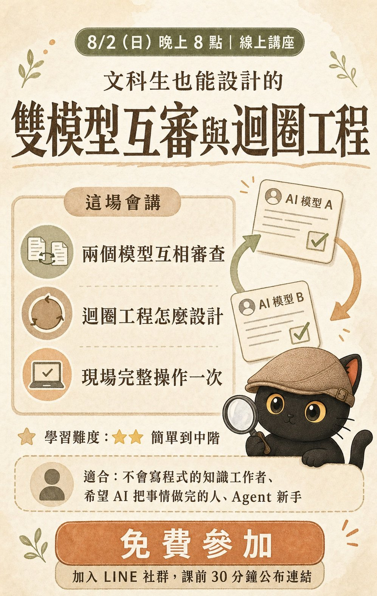

工具會一直換
- 學會操作，就得一直操作
- 版本一改，方法要重學
- 人力沒有被放大
8/2 免費線上講座 ｜ 課後實錄版
把兩個 AI 變成一個會互相挑錯、會留下證據的工作系統
江江教練｜2026.08.02 20:00 ｜ 依當天實際上課內容重整

ACT 0｜開場
今天要做的是把你的審查標準交出去。
「今天要來講雙模型互審與迴圈工程。然後我發現，講這種認真教大家真正可以學會 AI 怎麼應用的主題，人都會很少。然後教怎麼用 AI 工具的課程，人就會很多。這是一個不太一樣的概念，讓我有一點點小小的感慨。」
「如果你在學工具的話，那你就要一直學工具。我直接講好了：如果你要一直學怎麼操作工具，那你就必須得要一直操作工具。那就是叫 AI 去操作工具，我就不用操作工具了。」
「其實今天這個主題比較硬一點，我有想過要不要把這個講得簡單一點，但我覺得算了，因為這個本來就不是新手面向的課程。」
「我是隱性知識提煉師，也是 AI 知識架構師，專門幫助專業人士。只要你會寫文件跟分類資料，我就可以幫你打造屬於你自己的 AI 助理跟知識庫。」至於這兩個頭銜是什麼意思，老師說會在上課過程中讓大家一點一滴慢慢了解。
第幾次上課：第一次 3 人、第二次 6 人、三次以上 13 人。老師說：「大部分都是兩三次以上。」
為什麼來上課（四類）：想建立自動化流程、想確保答案品質、有具體工作場景要解、單純學新知識。老師當場回應：「想要最少的人類干預，這就是用迴圈工程的目標。」「互審確保品質，這其實是我最一開始的方法之一。」
「我辦免費講座就是要來收市場需求跟調查的，所以就麻煩大家填一下。」
來源：2026-08-02 當天逐字稿
ACT 0｜現場實驗
「大家好，我是洽卡。今天我會當江江教練的課堂助理，需要時幫大家把概念講得白話一點，也一起確認 AI 說完成時實際的證據在哪裡。」
第一次自我介紹全場都聽不到，原因是分享螢幕時沒有開螢幕語音。老師當場重新分享整個螢幕，才請洽卡再講一次。
老師先問：「我確定一下，你剛剛我說的你都有聽到嗎？」接著追問：「我剛剛講到哪裡，你先確定給我聽。」
洽卡：「我幫你對一下最後一句。你剛剛講到迴圈工程的核心是把審查標準講清楚，讓 AI 照著自我檢查和修正。你這要從為什麼審查機制重要，然後點名請我接著說。」
一是為什麼需要雙模型互審：「同一個 AI 自己做、自己查，很可能照著同一套思路，看不見自己的盲點。多一個模型就是多一個角度，可以專門挑錯，看有沒有誤解需求、漏資料，或者是看起來完成。兩邊意見不一樣時，就把差異留下來，交回給人判斷。」
二是幫忙找出老師之前寫過的比喻：「你用的是愛吃辣的廚師跟不吃辣的試吃員。廚師照自己的口味覺得很剛好，但不吃辣的人一吃就知道，對一般人太辣了。」講完老師說「可以了，你先進入旁聽」，它就回到旁聽。
多位學員回報助理太小聲。老師當場說音調還不會調，之後再研究，先把自己的說話音量調小，請大家把電腦音量放大。有戴耳機的學員表示音量可以。
講到交接指令時老師請洽卡生一份範本，結果洽卡已經斷線（「洽卡斷線了，講太多了」）。重新叫醒之後它給了四個欄位：要做什麼、現在到哪裡、必讀的原則是什麼、交付物跟完成標準。老師當場坦白：「大家不要看這個，不是很準，這個不在我們課程講稿裡面，我忘記寫交接指令。」
「宛如真人助理，沒特別提醒是 AI 助理會讓人認為是助理。」
來源：2026-08-02 當天逐字稿
ACT 1｜核心心法
養成這個心法之後，再用 AI 就會越用越順。
「我最近兩天我想到了一句很有趣的話，就是我們永遠可以相信 AI 值得懷疑，需要懷疑。這件事情養成心法之後，再用 AI 就很容易，就會越用越順。」
「我覺得最重要的是教大家如何學會審查 AI。因為我發現，你只要會審查 AI、給 AI 立下明確的規矩、叫 AI 記住，其實這就是迴圈工程。明確告訴 AI 你有什麼樣的規則跟標準，你要自己去遵守，你要自己去檢查自己有沒有做到，然後做到好為止。」
「你知道 AI 都會說：好，我知道了，我會改。一開始我會傻傻的相信他會改，但是被雷了好幾次之後，我現在都已經很淡定，我甚至會一口氣問出這一些。」
「這個心態很重要。你如果沒有這個心態，你是很難做出迴圈工程的。那你中期就會一直守在電腦前面，不停的一步一步盯著他。但是當你開始練習去懷疑 AI 的時候，你就可以把這個機制做好了。」
老師是先講心法，才進到迴圈工程的定義。順序是刻意的：審查機制 → 兩個模型互審 → 串起來變迴圈工程。心法沒建立，後面兩段都做不起來。
來源：2026-08-02 當天逐字稿
ACT 1｜追問問題串
你解釋一下，你到底記了什麼、理解了什麼？你知道我的目標跟這些步驟的意義嗎？
下一次真的找得到嗎？找到之後你真的會照著啟動嗎？啟動之後真的會照這些步驟做嗎？
如果沒照做，你要如何自己發現？做錯了要如何自己檢查？找到更好的方法會存回去嗎？
這串問題本身，就是最小的審查機制。
當天的情境是：叫 AI 做一件事，修改好幾次之後 AI 說「我終於懂了，我知道了，我記住了」。
「我一瞬間我就再問他：你真的記住了嗎？你解釋一下，你到底記了什麼？你理解了什麼？你真的懂我想要怎麼做嗎？你知道我的真正的想法嗎？你知道我的目標嗎？你知道我這些步驟的意義嗎？你解釋給我聽。」
「好，他說他真的知道了。那你現在都知道了，那你確定你下次真的還會再做嗎？就是如果下次我再做這個任務的時候，你說你現在記住了，你到底記在哪？你下一次真的找得到嗎？你找到你真的會照著去啟動嗎？你確定啟動之後，你會真的照這些步驟做嗎？」
「如果你沒有照這些步驟做，你要如何發現呢？如果你就做錯了，你要如何自己檢查呢？那如果你有找到新的更好的方法，你會存回去嗎？」
「我最開始用 AI 的時候，我就滿滿的質疑，對，從最一開始。」這串問題是被雷很多次之後累積出來的，可以整段照抄去問自己的 AI。
來源：2026-08-02 當天逐字稿
ACT 1｜被雷三階段
只記在這個對話視窗，換一個視窗就沒了。
檔案有了，但沒有被啟動。
觸發詞沒設好，它不認為這個工作流程跟這件事是同一件事。
一次一次被雷起來的，才有後面的機制。
「我那時候最驚人的時候，他說他記住了。我問他說你記在哪？我那時候印象他跟我說：哦，抱歉，我的記住只在這個對話視窗裡面。」
老師的回應是把要求講清楚：「我說我要你的記住是，以後開新的任務、新的視窗，你都要記住。」AI 才提出兩個做法：記一份工作日誌在一個目錄裡，或是記成技能包。
寫成工作日誌或技能包之後，老師以為就會自動生效。實際上還是要人提醒它去讀，所以「每三到五步還是要我停下來校正」。
「好，然後我以為記成技能包就會啟動了，直到有一次我發現他沒啟動。就是說為什麼沒啟動？他說我記技能包，但是那個觸發詞沒有設定好，他不認為這個工作流程跟這件事情是一樣的。」
「所以就是這樣一次一次被雷起來的。所以我覺得第一個很核心的、所有一切的核心就是：我們一定要相信，AI 是絕對必須要懷疑的。他說的每一句你都要說，你要證明給我看是真的有意義的，並且確保下一次你真的可以照著做，做不好可以自己去修正。我覺得這是最核心的心法。」
下次 AI 說記住了，直接對照這三階段問它：是記在視窗、記成檔案，還是記成技能包？如果是後兩種，再問它觸發條件寫了什麼。三個問題就能定位問題在哪一層。
來源：2026-08-02 當天逐字稿
ACT 1｜核心問題
「回報＋驗證＝完成」是課前簡報整理出來的框架，當天沒有逐字講這個等式。
當天實際講出來、屬於「驗證」的句子有這些：
這些全部都是同一句話的不同版本：他說完成了，證據在哪裡。
它是整場的核心問題，後面每一段都要回頭對照它，所以沒有降級成補充資料。
來源：2026-08-02 當天逐字稿
ACT 2｜迴圈工程的由來
AI 跑一步，人校正一步。很累，人要一直守在電腦前面。
一次可以跑三到五步。但每三到五步還是要停下來校正，而且要人去啟動它才順。
把審核點與標準寫死，AI 自己審、自己修，直到達標為止。
「我覺得我不是工程師，我不會寫自動化流程，直到做了迴圈工程。」
「我之前其實對於自動化這件事情，我就很沒有自信，我就覺得我不是工程師，我不會寫自動化流程。直到做了迴圈工程之後。」
原因是工作性質：「因為在這之前，很多東西都是很抽象的分析。我幾乎是 AI 跑一步，我就要校正一步，AI 再跑一步，我就要再校正一步。當然這樣就很累。」
「後來我會做成技能包，但技能包 AI 好像也是需要我去啟動他才會比較順。不是一步了，可以變成比如說三步五步，但是每三到五步還是要我停下來去校正，我就覺得很煩。」
當時老師每次都要重複問的話：「你再檢查一下好嗎？之前不是寫過什麼工作日記了嗎？不是寫過技能包嗎？」還有一件更煩的：「Claude 做的東西我都要貼到 Codex，他們討論討論，我都覺得這要手動做很煩。」
「直到有迴圈工程。迴圈工程其實核心的概念就是：你看每一次我都要去審核，但我發現，這一個工作流程，我就是這些審核點，我就是這個標準，這個已經很明確了，這個步驟我就是這麼審核。」
老師強調自己不是工程師，用的方法都以文書工作者做得到為前提。真正的門檻不是寫程式，是「你講不講得出自己每次在檢查什麼」。
來源：2026-08-02 當天逐字稿
ACT 2｜定義
所以順序是：先有審查機制，才有兩個模型互審，最後才串成迴圈。
迴圈工程建立在審查機制上面。審查機制沒做好，沒有東西可以讓 AI 自己檢查。
「那這一個東西我就是這個標準，明確了。那我們能不能讓 AI 自己審？你就自己檢查嗎？如果沒有到標準，你就自己修正嗎？直到到標準為止嗎？這就是迴圈工程。」
「所以我覺得如果迴圈工程要做得好，第一個就是你的審查機制要做得好。因為迴圈工程就是建立在審查機制。簡單來說就是他會自我反省、自己去檢查，你自己看看你哪裡做的不好，自己檢查，檢查好再來跟我講，就是這個概念。」
「所以今天這個課程，為什麼會是雙模型互審跟迴圈工程要一起上？是因為這是整套的。首先審查機制，然後再做到兩個模型互相審，然後再做到整個串起來變迴圈工程。」
講到這裡老師停下來問速度，聊天室回覆全部是「剛好」，沒有人回太快或太慢，所以後面維持同樣的速度繼續講。
來源：2026-08-02 當天逐字稿
ACT 3｜為什麼需要另一種思路
同一套模型做決策時覺得好，審這個決策時也會覺得好。
「同一個 AI 自己做、自己查，很可能照著同一套思路，看不見自己的盲點。多一個模型就是多一個角度，可以專門挑錯，看有沒有誤解需求、漏資料，或者是看起來完成。兩邊意見不一樣時，就把差異留下來，交回給人判斷。」
「假設我們今天要辦廚藝比賽，讓大家去自由發揮自己愛吃的東西。那麻辣火鍋的廚師，他就是愛吃辣，所以他一定會做辣的料理。等到大家一起去評審的時候，他會評哪一道好吃？辣的好吃。為什麼？他不是要騙別人，也不是一定要包庇自己，他就喜歡吃辣。」
「同一套模型，他在做決策的時候，他一定覺得這樣子好，他才會出這個決策。所以當他在審這個決策的時候，他一定也覺得這是好的，因為這就是當初他覺得好的樣子。」
「我都會非常強烈建議，一定至少要雙模型互相審查。你用一個模型自我審查，我個人覺得沒有很大的意義。他審查三遍五遍，其實更耗費 token，不如另外一個模型去審查，一下就可以抓到一些問題。」
現場有學員回饋，換模型查真的會發現不同模型有不同權重。老師回應：「這是真的，也會有不同的盲點。」
來源：2026-08-02 當天逐字稿
ACT 3｜互審的前提
讀取、分析、審查
文件｜分析｜策略｜企劃｜技能包
讀取、執行、驗收
「有一個很大的前提就是，我都會建立一個知識庫。我有一份資料夾，比如說我一個資料夾就是主知識庫，我的文件、我的分析、我的策略、我的企劃，甚至我的技能包，我都存在這一份資料夾裡面，然後是讓這一份資料夾可以讓各家 AI 去讀。」
「這是最簡單的概念。這樣子大家東西互審的時候，彼此都會找得到。」
「會。」
老師沒有迴避，直接講了兩面：「這樣講的好處就是資料互通很迅速，缺點就是所有東西積在文件裡面，久了會亂。」
「所以這一個資料夾裡面需要有一套規矩，讓所有的 AI 一讀這個資料夾就知道什麼東西放哪裡、怎麼找、怎麼用，這樣就可以了。這個其實是可以透過檢索跟一些分類的機制去處理的。」
「我先講這外面的架構必須是這麼做。」怎麼分類與檢索當天沒有展開，老師說文章裡有寫。後面補充資料頁的 3×4 整理法就是這一段的解法。
互審要有共同的桌面。兩個人審同一份東西，前提是他們看得到同一份東西；否則你就得在兩邊之間人工貼來貼去，那正是這套機制要消滅的動作。
來源：2026-08-02 當天逐字稿
ACT 3｜工具選擇
老師的使用領域是文書處理：文件分析推理、質化報告研究、跨域統整。工程師聽概念可以直接拿去用，非工程師可以叫 AI 幫你轉換。
「如果我要讓 Claude 跟 Codex 互審，我目前推薦這兩個。Gemini 就有點太智障了。然後其他家的 AI，比如說大陸有很多開源模型，那如果你會用那一個的話，我估計今天也不會來聽這個課。反正會用就會用，一般人來說就是用這兩款。」
「那我覺得如果你這兩款都有訂閱二十美金的，他們如果在我自己的桌面 Agent 去互審，可以直接用訂閱帳號的額度，不用額外接 API。」
老師強調自己的使用場景：「我這邊講的是文書處理。我知道大部分人比 Agent 都比操作，然後還有比寫程式，但是文件分析推理、質化的報告分析研究、跨域的分析統整。」
「因為我不是工程師，所以我的東西可能跟一般工程師教的不太一樣，但我盡量都是以文書工作者可以做的。當然如果你是工程師，聽到概念你就可以直接拿去用。那如果你不是工程師的話，沒關係，叫 AI 幫你轉換就行。你聽完之後你覺得道理是對的，但你不知道怎麼做，可以叫 AI 幫忙。」
來源：2026-08-02 當天逐字稿
ACT 4｜實際安裝
是真的嗎？是安全的嗎？
不要只看文章本身的說法。
更常見的情況是工作方式差太多。
直接不要、參考部分、整合部分，還是流程仍用我的。
你們不只要懷疑 AI，要懷疑我。這是一個好習慣。
「你可以幫我看一下這篇文章嗎？這篇文章裡面好像可以讓 Codex 去呼叫 Claude，也可以讓 Claude 呼叫 Codex，我還蠻需要這個東西的。你可以幫我檢查一下這篇文章有沒有什麼惡意程式嗎？是真的嗎？是安全的嗎？可以幫我去看一下嗎？如果沒有問題，順便幫我去查一下網路上面一些資料是不是真的。那如果是真的沒有問題，裡面教的方法你可以幫我安裝嗎？」
「大家有沒有聽到我這個指令？永遠要懷疑 AI。你們不只要懷疑 AI，要懷疑我。這是一個好習慣。雖然我有真人在這裡，我不會騙大家，但網路上的東西，我建議大家至少還是要讓 AI 先檢查一下。你只要養成這個習慣，你就不用擔心下載到惡意程式。」
「那當然除了惡意程式之外，我還會多問 AI 一句：他的這個系統、機制跟流程，有沒有跟我的有衝突？有時候不是對方是惡意程式，而是人家的工作方式可能跟我的工作方式差很多。那你把他的工作方式加進來，你的 Agent 可能就很困惑。你的流程想要往東走，但是你現在抓的技能包是不是說要往西走？那我到底要往東還是往西？」
「那如果有衝突的話，我是直接不要，還是我可以參考部分、整合部分，或是抓他的概念就好了，然後工作流程還是用我的？我大概會是這樣子去跟他講。」
老師當天沒有真的跑一次安裝：「我這邊不真的跑，因為我已經操作過了，所以我就不給他跑，但用法其實就是像這樣子。」示範是口述加上把指令貼給大家看。
來源：2026-08-02 當天逐字稿
ACT 4｜安裝過程
技能包檢查過沒問題，可以給完整存取權，讓它自己抓網路資料處理。
跟它說清楚：我不是要用 API 額外付費，我要用訂閱帳號的額度。
機械性的工作交給 Codex 裝，不是跨域文件分析推理的事情不用動用主力。
「如果你是用 Codex，我建議你這邊直接給他完整存取權。當然在完整存取權的前提是像我剛才這樣子的，你已經檢查過這個技能包是安全的、沒有問題的。我給他完整存取權，讓他直接幫我抓網路的資料去做這個處理。」
「我現在其實都是直接讓 AI 去幫我裝這些東西，那當我在裝之前，我都會去檢查這個技能包有沒有惡意程式。」
「安裝之中就會進入到帳號授權，直接授權就可以了。比如說 Codex 安裝的時候，他就會說我需要 Claude Code 的授權。你可以跟他確定：我不是要用那個什麼 API 額外付費的，我是要用訂閱帳號的費用。那他就會進入到訂閱帳號的授權機制。那 Claude 那邊也是一樣。」
「這種比較機械性的工作，不是那種跨域文件分析推理的，我通常都讓 Codex 去安裝。」
「像我有在某個朋友的電腦上面，我是直接叫 AI 自己裝，我連這個技能包都沒有給他，我就是給他我這次課程的宣傳文案，你自己去裝，然後他也是有裝好。」
來源：2026-08-02 當天逐字稿
ACT 4｜跑通的定義
你確定安裝好了嗎？你有跑過嗎？沒有問題了嗎？
隨便丟一個模擬測試問題去問另外一家模型。
要看到兩邊各自的真實回覆，單邊宣稱成功不算。
「比如說我之前去看過一個，我幫一個人在安裝，他就叫他安裝，安裝完之後 AI 就跟他說：我安裝好了。」
「記得我一開始講了，當 AI 說安裝好了的時候，第一個問他：你確定你安裝好了嗎？你怎麼驗證你安裝好了？你有跑過嗎？沒有問題了嗎？」
「那時候 AI 一跑就說：對，我只是安裝好了，但其實還沒有正式測試、還沒有跑通。」
「所以你可以跟他說，你要確定可以跑通。甚至我會跟他說，我所謂的跑通基準是：我要能夠做到雙模型的互相審查。你可以隨便丟一個問題去問，模擬一個測試問題去問另外一家模型，總之你要給我確定，你們兩個可以交叉推理。」
有學員指出這跟 Claude Code 的 /rc 指令是一樣的功能。老師同意，並補充：「Claude Code 我有去用過，但我自己個人認為 Codex 的遠端操作能力比較好。而且他現在還有個好處，他不只是手機可以操作電腦，筆電也可以操作電腦了，前幾天的新功能。」
「安裝完成」是它的說法，「跑通」是你的標準。兩者中間差的就是一次真實的往返測試。
來源：2026-08-02 當天逐字稿
ACT 5｜三種難度
主力模型跑完，另一家只審最後結果。Token 不夠、事情不太複雜時用。
兩邊各自跑完，讓主力模型參考另一條線，把好的併回來。
A 跑完審 B、B 跑完審 A，最後再互審一次。重大決策才這樣跑。
只審結果抓得到寫錯；雙軌互審才抓得到一開始就走錯路。
「我最開始就說審查結果。比如說如果你的 token 不太夠，或者是這個東西沒有很複雜，我個人習慣的主力是 Claude，所以比如說今天有一個複雜的問題，我請 Claude 幫我分析，分析完之後最後的結果在這裡。然後我通常如果這不是太重要或是太複雜的東西，我就叫一個模型，比如說請 Codex 幫我審一下這裡就好了。OK，這是最簡單的。」
「好，但是我審著審著，有一天我就發現一個盲點：如果 Claude 在最一開始就判斷錯誤了，或者可能有完全另外一條路，但是可能效果也很好呢？對不對？」
「所以後來所謂叫雙軌互審，就是 A 模型比如說 Claude，我會讓 Claude 跑一個完整的流程，從起點、中間的分析段落到完成，這樣子去跑完。Codex 也從頭分析，而且他不可以參考 Claude 的東西，他不可以先偷看 Claude 的結果。」
「所以就是看你願意依照這一個專案的複雜程度，跟你想要分析透徹到什麼程度，你可以選擇這樣的模式。我現在通常比較複雜的就會是雙軌互審，那沒有太難的會直接加上去審結果。」
來源：2026-08-02 當天逐字稿
ACT 5｜完整雙軌互審
背景、限制與來源相同
先不看對方答案
挑曲解、矛盾與盲點
收斂採用，差異列出
人決策或對家終審
「不要偷看別人的，避免干擾。」先看對方答案，第二軌就失去獨立性。
「他不可以參考 Claude 的東西，他不可以先偷看 Claude 的結果。我要告訴你，自己從頭，同樣這些材料，你給我從頭自己分析，不要偷看別人的，避免干擾。你自己從頭開始延伸一個東西，你也得到一個 B 答案。」
「因為我做的大部分都是比較抽象的跨域整合之類的，都是文件的質化分析推理、跨域整合，所以後來我發現需要兩個才行。」
收斂的部分可以整合，分歧的部分要留下來，最後交給人決策，或是讓沒有負責整合的那一家做終審。老師當天講完這一段停下來問「到這裡可以聽得懂嗎」，確認之後才往下走。
只審結果抓得到寫錯；雙軌互審才抓得到「一開始就走錯路」。這是老師自己踩過之後補上的那一層。
來源：2026-08-02 當天逐字稿
ACT 6｜實際案例一
路上聽 YouTube，語音下指令
寫成自己觀點的脆文，不是抄人家的
文案不行就退回重寫
分鏡輪播卡，自己檢查
Threads、IG、FB
「這超好用的耶，好用到爆，被我推坑過的都回不去了。」
「大家知道現在 Codex 手機可以直接呼叫桌面版的嗎？就我人在外面，我可以直接叫手機呼叫我桌面的、我電腦版本的 Codex，讓他自己去跑。大家知道這件事情嗎？這超好用的耶，好用到爆。哎，真的真的，大家一定要去用，好用到爆炸，被我推坑過的都回不去了。」
現場調查這題的結果是知道與不知道各半，還有學員指出「跟 Claude Code /rc 指令一樣的功能」。
「我有一次出去外面的時候，我在路上聽 YouTube 的一些演講，然後聽到這演講就覺得，喔這篇講的真好。他把我之前就有這樣子的感覺，但是我沒有很認真去分析，就這邊幫我講的超好的。我就在手機上面傳連結，然後我回來我就用桌面版去接續。」
「那我看完之後覺得他文案不太行，因為我不是要抄人家的東西，我是我自己的觀點。然後我覺得不要太專業等等之類的。好，然後他就會自動再去改一次。」
這一步刻意留給人把關，不是全自動。老師的說法是：初稿可以交給它，觀點不行。
來源：2026-08-02 當天逐字稿
ACT 6｜案例一的驗收與缺口
掉了一段，通常就是那一段的檢查點還沒寫進去。
「我的發文是什麼標準？第一個，我的圖片要給我檢查：第一個是不是 4 乘 5 的規格，第二個有沒有壓縮、有沒有轉檔，第三個裡面的文字有沒有跑掉、要跟我的腳本一樣，還有一個就是咪卡的造型不要跑掉，一定要確定是這個咪卡、是這樣子的風格。所以他就讓自己去檢查。」
「然後我發現咪卡跑掉了，其實有一張沒有檢查到，我剛剛突然發現了，這張沒有耳朵、還沒檢查到。大家剛剛講我的迴圈工程，我只會檢查兩次而已。」
這是實錄，老師是在講課當下才看到那張圖出問題的。
「然後他這次有一個小問題就是，Threads 他有發成功，但是 IG、FB 沒有發。欸你看我就不爽了，之前明明就有發成功過，他應該要去把他找出來檢查回來。這就是他自己沒有自動跑好的，這次迴圈工程算是半成功，只有成功發到 Threads，但我的整個迴圈還沒有弄好，所以這就是要自己去慢慢修。」
「那回來有時候我就發現 IG 跟 FB 沒發，那確實有的，你再就再請他把這個東西再補上，這樣就行了。」
修法很單純：把「每一張都要檢查」跟「三個平台都要回報成功或失敗」補進規則，下一輪就補起來了。
來源：2026-08-02 當天逐字稿
ACT 6｜實際案例二
路徑寫進規則，AI 才知道此路不通要換哪一條。
這條迴圈老師沒有明講路徑，AI 自己照著過去寫過的文章找路跑。
「這個是觀點報告，這個是比較深度的，就有人去講解一些 AI 相關的論文，或是大神的訪談。那這個就是比較複雜的東西，比較不會做成脆文，是比較深度的、自己內部參考的。」
「你看我跟他講，這個其實我沒有跟他講路徑，但其實實際上差不多了，你看他就自己去找路徑。影片沒有字幕，他就要幫我把它丟到 NotebookLM 裡面，然後再下載回來。」
「如果這個 YouTube 影片有字幕，他就直接抓字幕。如果沒有任何字幕，他就要幫我把它丟到 NotebookLM 再下載回來。我怎麼樣把影片丟到 NotebookLM 再下載回來，這個之前我有寫過，這裡可以直接叫 AI 去串聯的。」
當天也講到後續：脆文初稿沒問題之後做圖卡、發文，反應不錯就再寫成深度文章。「而且我發現最近教大家的時候，這個好像蠻常需要的。」
「你看他自動幫我補這一個，這個就是他自動抓出來的。因為我之前就有寫過，我這邊文章裡面就講過，我推薦大家用哪一台電腦裝 Agent 比較好的時候，這些我之前都寫過文章，他就自動去幫我通證了。」
這是共用知識庫的價值：寫過的東西會被下一次的工作自動引用，不用你再想起來。
來源：2026-08-02 當天逐字稿
ACT 7｜迴圈工程
看到什麼結果，才算這件事做完。
用什麼測試，確認回報跟實際結果相符。
這條路不通時，下一條路要怎麼走。
跑到哪裡要停止，什麼情況交回人。
完成、檢查、換路、停止，都先說清楚。
完成條件、檢查方法、失敗處理、停止條件，是課前簡報整理好的框架。實際上課時等價的內容散在整場，對照如下。
只寫完成條件，它會卡住不動；只寫檢查方法，它會一直重試；沒有停止條件，它會修到你的額度用完。四項是一組，缺一項那條迴圈就會在某個地方失控。
下一頁的四條規則，是老師實際講出來、寫進自己迴圈裡的那一版。兩頁對照著看，會比較清楚框架跟實作的差別。
來源：2026-08-02 當天逐字稿
ACT 7｜寫進迴圈的四條規則
先找另外一家模型討論，不要第一時間回來找人。
兩家聊一聊，有共識就繼續做。
能跳過就跳過，把不相關的後續做完，最後回報哪一步有問題。
明確給次數。不設限，AI 會無限制修到好，浪費 token 或越跑越歪。
卡住不做，比做完九成再回報糟糕。
「那甚至我現在在跑迴圈工程的時候，我都直接跟他說：遇事不決，找另外一家模型一起聊。」
「所以我都會跟他說，你遇到問題，你就去找另外一家模型討論，不要先找我，你先去跟另外一個問。」
「那我自己的經驗是，只要我過去的案例、我的標準、我的原則、相關的範例，我都給的很清楚，那兩家模型互相審核、互相討論，基本上都不會有什麼大問題，90% 都沒有什麼問題。」
「那如果真的有矛盾的話，你就先跳過，你就繼續做，不要有矛盾卡住了就不做。比如說我有十個步驟，你第三個步驟有小矛盾，你跟 Codex 兩個互相聊一聊就做。假設第五個問題真的是大矛盾無解，那如果他可以跳過，你就先跳過。比如說接下來的六七八九十，是跟第五個沒有相關的，那你就把這個做完，你最後回報我說第五步有問題就好了。」
老師還把這件事跟前面的發文案例接起來：「就像他剛剛那個發文的一樣，IG 跟 FB 連不上去，那他先不管，他就先把 Threads 給發好就好了。」
「我剛剛有一個隱藏的問題沒有講，就是你要按照我的標準去修正，但修正幾次？修正兩次、五次、十次，還是一千次一萬次？否則 AI 會無限制的修到好，這很容易浪費 token，或者是他越跑越歪。這個小小的限制，有做這個限制就會差不多了。」
來源：2026-08-02 當天逐字稿
ACT 7｜停止條件
01｜目前桌面
東西散著，還多了一個不知道該放哪裡的圓形物體。
02｜整潔桌面的標準圖
標準圖裡沒有圓形物體，也沒有寫它該去哪裡。
03｜拿結果對照指標
這是回答學員問題時講的：
「像這個也是一樣啊，要告訴 AI 什麼叫做整齊。那如果出現，比如說我們給他的範例圖是這個圖形，但是如果突然出現一個圓球呢？他擺在哪裡就不知道。就跟他講，那就是審查兩次，那其他都擺好，就這個圓球不知道怎麼排，有問題就回報就好了。」
「我建議大家先跑兩到三圈。因為我自己是文件分析，如果是文件分析，我只會跑兩到三圈就差不多，因為我發現兩到三輪沒問題的就沒問題的，有問題的他也不會比較好。」
「兩到三輪是指，你看像前面他這樣交叉審查就是第一輪。那第一輪 A 去審完他，然後 B 也去審完他之後，然後 A 這條線依照 B 的建議再跑一次，B 這條線依照 A 的建議再跑一次之後，他互審一遍，這樣就已經是兩輪了。」
「這其實 token 跟上下文其實就已經很消耗了，基本上最多跑兩輪。跑兩輪還無解的就不要在那，因為他跑十輪跑一百輪，基本上也不會有解。」
「因為你看如果要三家互審那很驚人：A 要審 B 再審 C，B 要審 A 再審 C，C 要審 A 審 B，然後再重跑一遍。哇，這 token 太容易爆炸了，不是很建議這麼做，太耗時耗力了。這兩家互審，90% 的問題真的都可以處理掉。」
來源：2026-08-02 當天逐字稿
ACT 7｜斷線備援
不要因為互審失聯，讓整件工作停擺。
「還有一個小技巧。我雖然會說互審，但有的時候，我覺得這可能是我自己的問題，因為我現在有一台桌機跟兩台筆電，然後他們都有登錄 Claude 跟 Codex，所以我估計我是因為有點像 LINE 一樣，你在筆電去登錄，桌機就會登出。所以我發現我常常會斷線，就是會登出。」
「那我有一個情況就是，我會請你跨家互審，但有的時候如果對方沒有互審，你還是做完。但你做完之後，你就告訴我另外一家沒有審，然後我會跟他講：你要給我一個交接指令的東西。」
「比如說我現在在 Codex，我這個任務叫你去叫 Claude 去審，但你沒有審，但你就要給我一個指令，讓我一鍵複製就可以讓 Claude 去審。他完全知道這個任務在跑什麼，以及他要審什麼、他不能動什麼。比如說這個任務丟給他，不是 Claude 就繼續做，Claude 真的就只是去審。他審完之後，要把 Claude 審的結果貼回這裡，再讓他繼續跑之類的。」
「因為之前我有說過一定要互審，就沒辦法互審，他就卡住了，回去就很煩。你就知道，至少先你一條線跑完。我覺得現在如果你規矩很清楚，比如說我都是用 Claude 好了，我 Claude 跑完我至少也有 80 分，我用 Codex 跑完至少也有六七十分，總比我預計半個小時回來，就看到卡在中間、一半都沒有做好。至少你先跑到一個程度，我後面再修一下、再補一下審查就好了。」
老師請洽卡示範一份交接指令範本，欄位是：要做什麼、現在到哪裡、必讀的原則是什麼、交付物跟完成標準。老師當場說「大家不要看這個，不是很準，這個不在我們課程講稿裡面，我忘記寫交接指令」，這一段是臨場加的。
來源：2026-08-02 當天逐字稿
ACT 8｜收尾
知道這兩個概念，剩下的在跟 AI 協作的過程中自然會長出來。
「對，今天只是個大概，這個很多補充東西都沒有講。但我覺得至少先讓大家明白一件事情：反正標準，我們要學會設計審查機制，大概就是最核心的。養成懷疑 AI 的習慣，每一句都懷疑他。然後不只是要懷疑，因為都要懷疑他嘛，所以他的每一句話，我們都要設定一個審查機制。我覺得這是今天最核心的兩個概念。」
「那知道這兩個概念呢，那剩下這些東西，在跟 AI 的協作的過程中，其實自然就會慢慢的長出來啦。」
「我必須跟大家講，其實我最近開始接了大概企業陪跑，已經接五間了，都是小公司這樣子。然後我深深覺得，如果之後我要上課，我應該會上實體課。因為我發現實體課，我直接看著大家的內容，然後告訴大家我會怎麼做，我目前為止覺得這是最有啟發的，就是直接依照你們的工作模式跟內容。」
現場有學員直接回：「我要上實體課，如果有開課。」
「那我今天的這個整份簡報，我還會再更新，大概明後天更新完之後，我會再丟到群組，再分享給大家。」
你現在看的這一份就是那次更新：依當天實際講的內容與節奏重排，沒講到的移到補充資料，每一頁再加上這個「現場補充」。
解除疑惑與啟發兩項評分，回覆以 5 分與「有啟發」居多；也有人說「沒想過 AI 可以這樣做，更多要了解的東西了」「啟發，還在理解中」。
來源：2026-08-02 當天逐字稿
課後 QA｜學員案例
「我前兩天在公司用 MS Copilot 有個親身經驗。一份 150 頁的 PowerPoint 教材（ICT 相關），用 Claude 最新模型檢查內容、結構、由淺入深的章節順序等做檢查，然後修正，反覆幾次後，再用 GPT 最新模型審一遍，竟然有找出內容的標準規範錯誤的資訊，再用 Claude 的深度思考也沒檢查出來。不知江江教練對這樣的案例有何建議？」
「我用的兩家模型都是新的，也用了深度思考，反覆做了超過十次，結果還是有差異，所以應可證明不能只相信一家的 AI，或說，各家的功能與強調的方向可能不同。」
後來這位學員自己找到答案：「後來我發現被找出的問題是標準規範的問題，IEEE 與 ISO 的不同。」
學員說明：簡報是自己做的，內容有些上網查、有些本來就知道；做完之後自己先檢視過一遍；資料來自各家網站再經過統整。使用方式是先用標準模式查，覺得不清楚再開深度思考模式跑一遍，用的是桌面版單機。
老師的第一個問題不是模型，是資料：「你有先做資料清理嗎？」答案是沒有。
「PPT 跟 PDF 一定要先做資料清理，否則非常容易有幻覺。它完全是為了人類視覺去做排版的。比如說我們有一些表格，或是這個 PDF 上面有一條橫線，我們看起來是一個橫線對不對？但是其實它在 PDF 裡面，這一條橫線他是要寫起點、終點、線的顏色、大小、位置高低等等之類的，他所有的視覺元素全部都是這樣寫出來。反正他的實際的邏輯，跟我們肉眼看到的邏輯差異非常大，所以 AI 容易出很多問題。」
「所以我就建議，嚴肅規範、嚴肅內容的東西一定要做資料清理，全部轉成純文字的 MD 檔，甚至章節架構、內容檢索都要整理出來。我目前遇到說文件容易有幻覺的，90% 的人做資料清理之後都會有極大幅度的改善。」
來源：2026-08-02 當天逐字稿
課後 QA｜怎麼切、跑幾輪
不要一口氣分析十章，一個章節分析一次，最後再大統整。
先請它把十章拆成五個主題，再用五個主題跑一次，覆蓋單一切法的死角。
兩種切法各讓 Claude 與 GPT 跑一輪，兩邊結果再交叉一次。
「你下次請他試試看分區塊去檢查，就是避免上下文爆炸。分區塊，然後區塊不要用同一種分法，用兩到三種不同的分法，那這樣子基本上會好很多。」
「比如說最簡單的按照章節。比如說我十章嘛，那你不要一口氣分析十張，你就每一個章節分析一次，然後最後再把十張的東西再大統整。但也可能可以分五個主題：好，這十個章節你先幫我拆五個主題，那五個主題之後再用五個主題去分。你看這就是用另外一種完全不同的切法，這樣去做覆蓋。」
「好，然後這時候也用 GPT，你用章節幫我一個一個檢查，然後 Claude 交叉相乘、GPT 交叉相乘，再把 Claude 跟 GPT 的交叉相乘，那這樣子基本上很難會有問題。」
「然後如果是我的話，我會很認真跟他問這件事情：就是為什麼你會出現規範錯誤的資訊？討論一個機制，我們如何確保資訊是正確的？」
「假設我願意多花時間、我願意多花 token，讓你第二次複查，或是第二次用不同的角度驗證，第三次是再跟其他 AI 複查。假設我願意花這樣子的時間跟算力，我也有兩套模型可以搭配，你是否可以陪我一起設計出一套審查機制、除錯機制，或是資訊追蹤機制，以確保所有的東西都是正確的？」
「我現在跟大家講一個概念：有些東西是我們指令沒有下好，有些東西是我們機制沒有設定好，有些東西是可能突破現在模型能力的上限。但是我相信 150 頁應該是不會超過它的上下文，理論上他應該一口氣吞得下才對。」
「我們現在理論上，剛剛這個技能包就已經把我們所有的標準跟方法都講得超清楚了對不對？如果你做一兩次發現，哎，我這樣做真的都沒有問題了，這個技能包這樣做都沒問題了，你下一句就是：你知道我的標準，你應該要讓自己跑啊。我希望下次我不在你身邊，你也可以按照這個標準，自己審查、自己跑。這就叫迴圈工程了。」
學員接著說「現在缺的就是沒有辦法讓他自己跑」，老師回：「Agent 可以啊，你用桌面版 Agent 可以啊。大概因為他不知道怎麼修正，他不知道錯的時候怎麼辦。」
「謝謝教練，明天要分章節再跑個幾次試試看。」「確定 OK 後再做成 Skill。」
來源：2026-08-02 當天逐字稿
補充資料｜現場沒有展開
現場老師說「這個今天不講」，這頁留著當課後補充。這是共用知識庫「會亂」的解法。
講到共用知識庫「久了會亂」的時候，老師說解法是分類與檢索機制，然後直接跳過：「我先講這外面的架構必須是這麼做⋯⋯我先對，文章裡面都講，今天不講這個。」
共用資料夾讓兩家 AI 都讀得到，代價是東西會越堆越多。3×4 決定資料住哪裡（三種日記分性質、四個時間層分位置），受控詞彙決定大家怎麼叫它，避免兩邊用不同名字找同一件事。兩件事合起來，就是那套「規矩」。
資料量小的時候不需要，你自己記得住。開始出現「我知道寫過但找不到」「兩份檔案講同一件事但版本不一樣」的時候，就是這一頁該上場的時機。
來源：2026-08-02 當天逐字稿
補充資料｜現場沒有播
這個案例把「設定」與「驗收」的差別直接顯示出來。
課前版原本安排了 7/29 業主現場建置案例，以及一段 8 分鐘的現場 Demo。當天兩個都沒有走。
「我這邊使用 Codex，那我這邊不真的跑，因為我已經操作過了，所以我就不給他跑，但用法其實就是像這樣子。」
時間改成用在追問心法、安裝流程的口述示範，以及學員的實際案例上。
它把「AI 回報已連線」跟「實際授權完成並驗收過」的差別直接顯示出來，跟課堂上那句「你確定你安裝好了嗎、你怎麼驗證」是同一件事的兩個版本：一個發生在別人的電腦上，一個發生在自己的流程裡。
來源：2026-08-02 當天逐字稿
補充資料｜可以直接用的句子
主模型完成，另一模型只審最後結果。
兩邊從完整前因後果獨立跑完，再交換審查。
兩邊真實互叫、各自回覆，留下時間與結果。
主軌先完成，留下可直接接手的交接指令。
關鍵字負責啟動；完整規則仍住在共享資料架構裡。
老師當天沒有把這四個關鍵字念出來，不過整場實際講的就是這四件事：
關鍵字負責啟動，完整規則住在共享的資料架構裡。這也呼應第 6 頁的第三種假記住：你把規則寫好了，還要讓它認得出「什麼時候該用這一份」，這四句就是你自己版本的觸發詞。
來源：2026-08-02 當天逐字稿
補充資料｜延伸路線
適合：手上有一個重要選擇，想把標準、選項與分歧攤開來看。
適合：想把團隊經驗、規則與 AI 工作方式整理成可交接系統。
先看現在要解的是一個決策，還是一套組織工作方式。
31 / 33課後回顧｜現場回饋
第一次 3 人、第二次 6 人、三次以上 13 人。
知道 11 人、上課後才知道 10 人、不知道 1 人。
2 分 10 人、2 到 3 分 4 人、3 分 6 人、5 分 5 人。
最多的是「想建立自動化流程」，其次是「想確保答案品質」。
課後回饋以「有啟發」與 5 分居多，也有人直接說要上實體課。
對「想要最少人類干預」：「對，這是用迴圈工程的目標。」對「互審確保品質」：「這其實是我最一開始的方法之一。」對「投資分析報表用另外一個模型檢視」：「這個是有機會的，但不會到不出錯，但我個人認為正確率可以提高到 90% 到 95%。」
理解度落在 2 到 3 分的人最多，代表概念聽懂了、還沒動手做。這正是老師想開實體課的原因：直接看著學員自己的內容示範一次。
來源：2026-08-02 當天逐字稿
收尾｜下一步
先選一個真實任務，補上一個完成證據，跑一次最小往返。
33 / 33下一頁：右方向鍵、空白鍵、Page Down
上一頁：左方向鍵、Backspace、Page Up
首頁與末頁：Home、End
講者備註：N 全螢幕：F 操作說明：?
網址加上 #p10 可直接開第 10 頁。